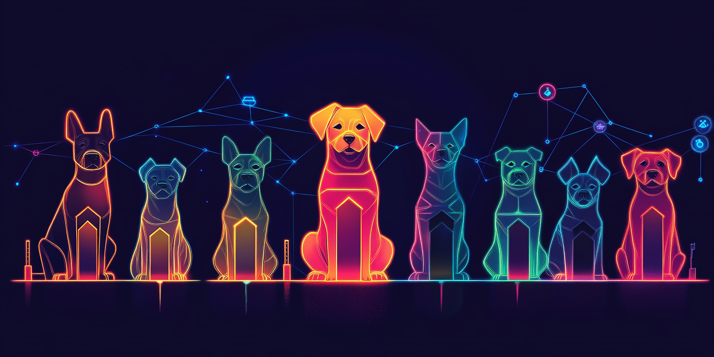

Overview
Doggington Token ($DOGGO) is more than just another memecoin; it represents a vibrant, community-driven cryptocurrency that blends humour, innovation, and a real sense of value for the future. Starting as a light-hearted tribute to internet meme culture, Doggington has rapidly evolved into something far more significant: a full-fledged ecosystem designed to deliver both fun and utility to its holders. With a focus on expanding beyond the typical memecoin concept, Doggington combines community engagement, NFT utility, and DeFi features to create a unique offering. Our tokenomics ensure that every $DOGGO holder benefits through mechanisms like token burns, staking rewards, and community voting. From the DogPark DAO, where community members directly influence key decisions, to unique NFT assets like collars and accessories for virtual pets, Doggington delivers an interactive experience that keeps the fun alive. Through initiatives like Mutts for Charity, where a portion of every transaction supports animal welfare organisations, and PawPound Staking, where holders earn exclusive perks, Doggington provides more than just monetary gains—it builds real-world impact and connections. Built on the Solana blockchain, $DOGGO ensures a smooth, scalable, and cost-efficient experience for all users, making every interaction seamless. Whether you're here for the memes, the future opportunities, or to be part of a supportive and engaging community, Doggington Token is ready to offer it all. Embrace the fun, get involved, and join us as we take $DOGGO to new heights—because it's not just about the moon; it’s about the journey and the joy along the way.
Token Supply and Distribution
- Total Supply: 1 Trillion DOGGO
- Circulating Supply: ~18.4 billion DOGGO initially distributed to early adopters and public liquidity pools.
- Founder's Wallet: 1 Billion DOGGO reserved for project development and community initiatives.
- Liquidity Pools: A substantial amount of tokens are earmarked for liquidity pools on Raydium, ensuring smooth trading and low slippage.
- Burn Mechanism: A deflationary model where 1% of all transactions are burned, reducing total supply over time, driving scarcity.
- Community Reserve: 5% allocated for community airdrops, staking rewards, and gamified giveaways to foster engagement.
Key Features & Utility
DogPark DAO
Vote on key decisions and have your voice heard in the Doggington community!
Mutts for Charity
A portion of fees helps animal shelters and rescue organisations. Make a difference!
NFT Collars & Breeding
Exclusive NFTs that you can use to customize avatars, with breeding options available.
DeFi and Staking Mechanism
PawPound Staking: PawPound Staking offers $DOGGO holders the chance to earn additional rewards while being a vital part of the ecosystem. By staking your $DOGGO, you earn "Paws," a secondary in-platform currency designed to reward loyal participants. Paws can be redeemed for a variety of unique and exclusive rewards, such as in-game assets, rare NFTs, or even more $DOGGO tokens. The NFT rewards may include limited-edition collars, costumes, or accessories for your virtual Doggington pets, providing holders with rare and customisable features within the ecosystem. PawPound Staking isn’t just about earning extra tokens; it's about fostering long-term commitment to the Doggington community. The longer you stake, the more Paws you earn, which can also open the door to early access benefits, exclusive NFT releases, and special community events. By staking $DOGGO, participants effectively contribute to stabilising the token's market supply, creating a healthier economy for all holders, and ensuring continuous, meaningful participation in the development of Doggington Token. As the staking feature matures, future plans involve integrating Paws into our broader gaming platform, allowing holders to unlock powerful abilities or in-game boosters, further expanding the utility of staking.
Liquidity Farming: Liquidity farming with $DOGGO allows holders to maximise their earning potential while providing crucial liquidity to decentralised exchanges (DEXs) such as Raydium and other Solana-based platforms. By adding $DOGGO to liquidity pools, holders receive LP (Liquidity Provider) tokens and are eligible to earn bonus $DOGGO rewards. Liquidity farming helps stabilise the token’s trading volume, reduces slippage, and ensures users can smoothly buy and sell without significant price fluctuations. Participants in liquidity farming also gain unique perks that further incentivise their involvement. Not only do they receive bonus $DOGGO tokens, but they are also granted increased governance voting power through DogPark DAO, effectively boosting their influence on critical community decisions. This means liquidity farmers play a significant role in shaping the Doggington ecosystem—having a voice in decisions ranging from partnership proposals to feature development and community fund allocation. Additionally, Doggington incentivises LP providers by offering them early access to exclusive project features, NFT drops, and participation in limited-time staking opportunities with enhanced returns. As a liquidity farmer, you’re not just a trader; you're a key part of the Doggington backbone, helping maintain robust market conditions while being rewarded for your commitment. The Liquidity Farming program is also planned to evolve into offering cross-chain farming opportunities, enabling users to bridge into other DeFi ecosystems while still earning bonus $DOGGO, thus broadening both the exposure and utility of the token across different blockchain ecosystems. With PawPound Staking and Liquidity Farming, Doggington Token offers two powerful ways for $DOGGO holders to get more deeply involved with the community, earn exclusive rewards, and benefit from their long-term support for the project. It's all about giving back to our community and ensuring that everyone who's in it for the journey gets the most value out of their participation.
Technical Aspects
- Blockchain: Doggington Token is built on the Solana blockchain for speed, scalability, and ultra-low fees, allowing seamless interactions.
- Burn & Reward Mechanism: Doggington employs a dual-purpose tokenomics model with each transaction; 1% burn and 1% redistribution to all holders. This creates an incentive for holding, reduces circulating supply, and rewards the loyal community.
- Mutant Dogs: Introducing a staking mechanism called "Mutant Dogs." Users who stake a set amount of DOGGO for a specified period get a "Mutant Token," which can be used for premium features or voting power amplification.
Community and Marketing Roadmap
- Howl-A-Thon: Monthly community events where DOGGO holders participate in different challenges to earn free tokens or NFTs.
- Wooflist Partnerships: Exclusive partnerships with up-and-coming DeFi projects and NFT creators, offering whitelist spots to the most loyal DOGGO holders.
- Celebrity Endorsement & Influencer Marketing: Partnering with influencers and celebrities, especially in the pet community, to boost visibility and mainstream appeal.
Future Utility
- Gaming Integration: Doggington is integrating into various games as a play-to-earn currency where users earn DOGGO by completing challenges or competing against each other.
- Payment Token: Partnering with pet-related e-commerce platforms so DOGGO can be used for purchasing pet supplies, grooming services, and even pet insurance. Imagine buying your pet's next collar with DOGGO!
- Augmented Reality Pet: Building a simple AR app where users can adopt, walk, and play with virtual pets linked to their DOGGO tokens. The more DOGGO you hold, the cooler the features for your pet.